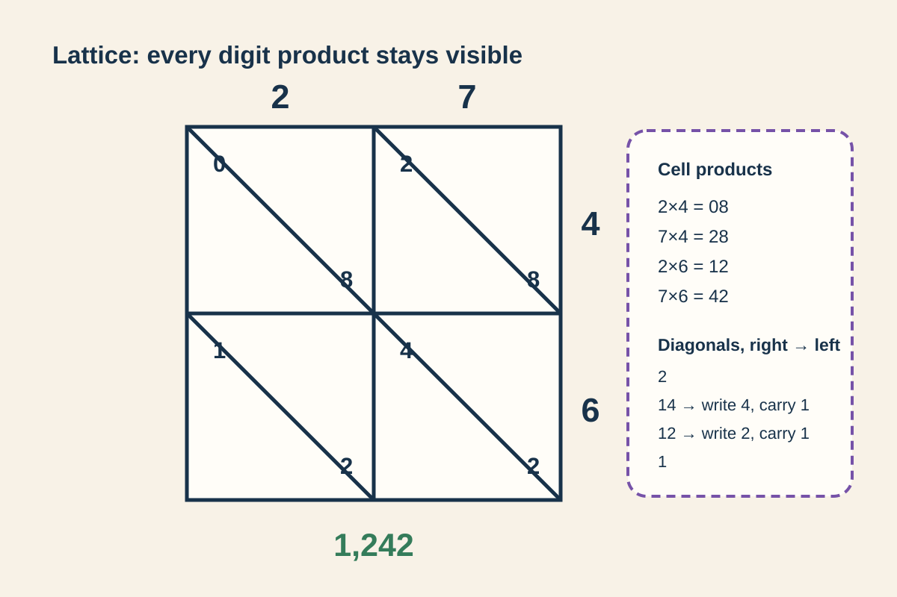

CH11 M06 · Nearby known product passedCH11 M13 · Unit bundles retuned

CH11 M14 · Lattice passedCH12 M08 · Estimate then exact rebuiltCH12 M10 · Place map rebuiltCH13 M10 · Abstract common unit rebuiltCH14 M09 · Verbal unit story retunedCH14 M10 · Abstract common unit rebuilt